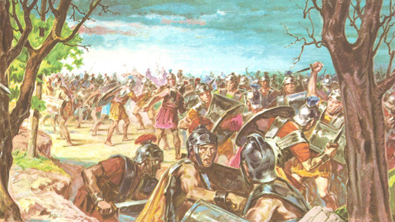

| |
Battle of Philippi
The Battle of Philippi was the final battele in the Wars of Second Triumvirate between the forces of Mark Antony and Octavian and the army of Julius Caesar assassin Marcus Junius Brutus and Gaius Cassius Longinus. The Battle took place at Philippi in Macedonia in 42 BC.The Battle had two engagements ,one of them was Brutus faced Ocatvian which happened in first week of October ,while Antonys forces were up against those of Cassius.Brutus defeated Octavian and entered his legions camp,but to the south Cassius was defeated by Antony and after hearing the false news that Brutus had failed against Octavian,Cassius commited suicide.Brutus then took over the charge of the Cassius remaining army and ordered them to retreat to their camps with their spoils and Thus the battle was essentially a draw.A second encounter on october 23,finished off Brutus forces ,and he also committed suicide in turn ,leaving the triumvirate in control of the Roman Republic.

Battle of Philippi
For
more information please visit :
More Information about the Battle of Philippi from wikipedia
| |
|
|